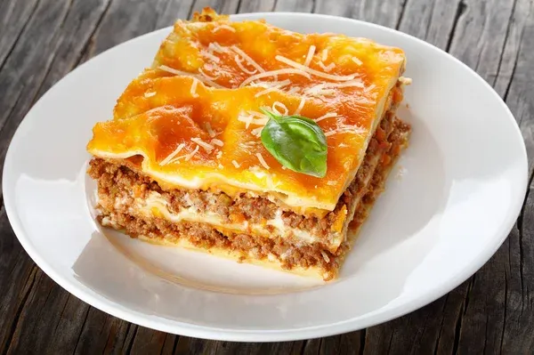

WORLD'S BEST LASAGNA

How to Make Lasagna
Making lasagna can be time-consuming, but the results are well worth the wait. You'll find a detailed ingredient list and step-by-step instructions in the recipe below, but let's go over the basics:
Lasagna Ingredients
Meat: This super meaty lasagna has sweet Italian sausage and lean ground beef.
Tomato products: You'll need a can of crushed tomatoes, two cans of tomato sauce, and two cans of tomato paste.
Sugar: Two tablespoons of white sugar add subtle sweetness and enhance the flavor of the sauce.
Spices and seasonings: This lasagna recipe is flavored with fresh parsley, dried basil leaves, salt, Italian seasoning, fennel seeds, and black pepper.
Lasagna noodles: Use store-bought or homemade lasagna noodles.
Cheeses: Parmesan, mozzarella, and ricotta cheese make this lasagna extra decadent.
Egg: An egg helps bind the ricotta so it doesn't ooze out of the lasagna when you cut into it.
How to Make Lasagna Step-By-Step
Make the meat sauce.
Cook the noodles.
Make the ricotta mixture.
Layer the lasagna according to the recipe instructions.
Cover with foil and bake.
Let the lasagna rest before serving.
Home Page
Baguette Pizza
Grilled Cheese Sandwich